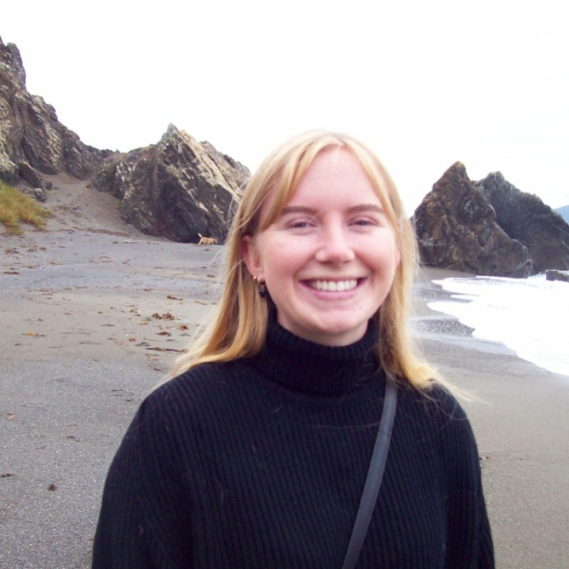
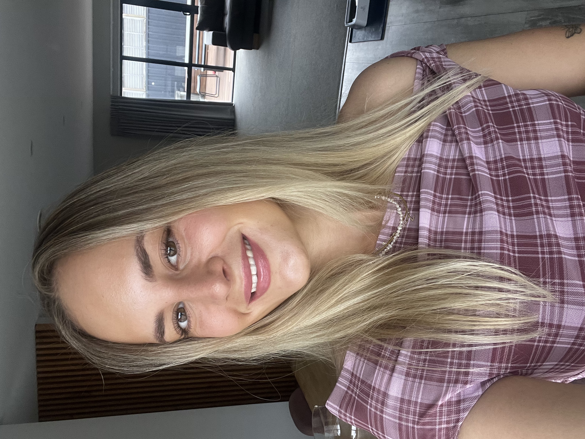
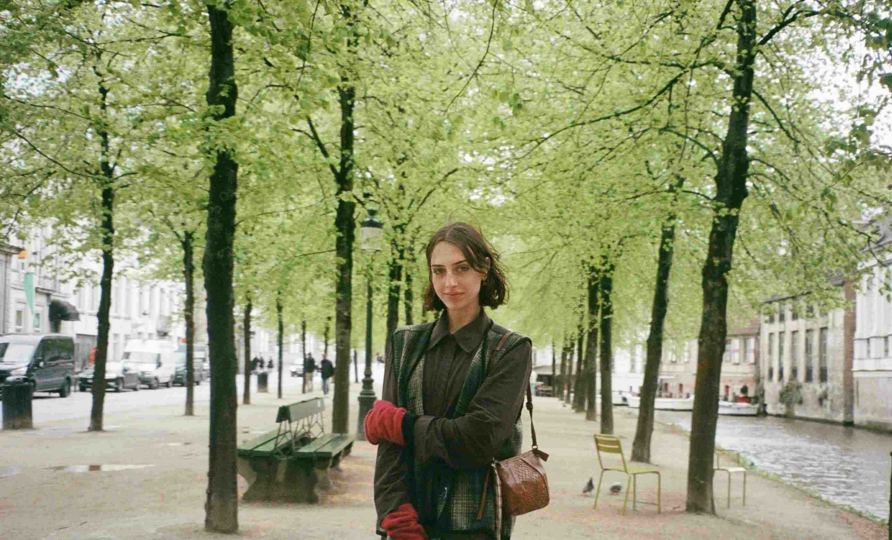
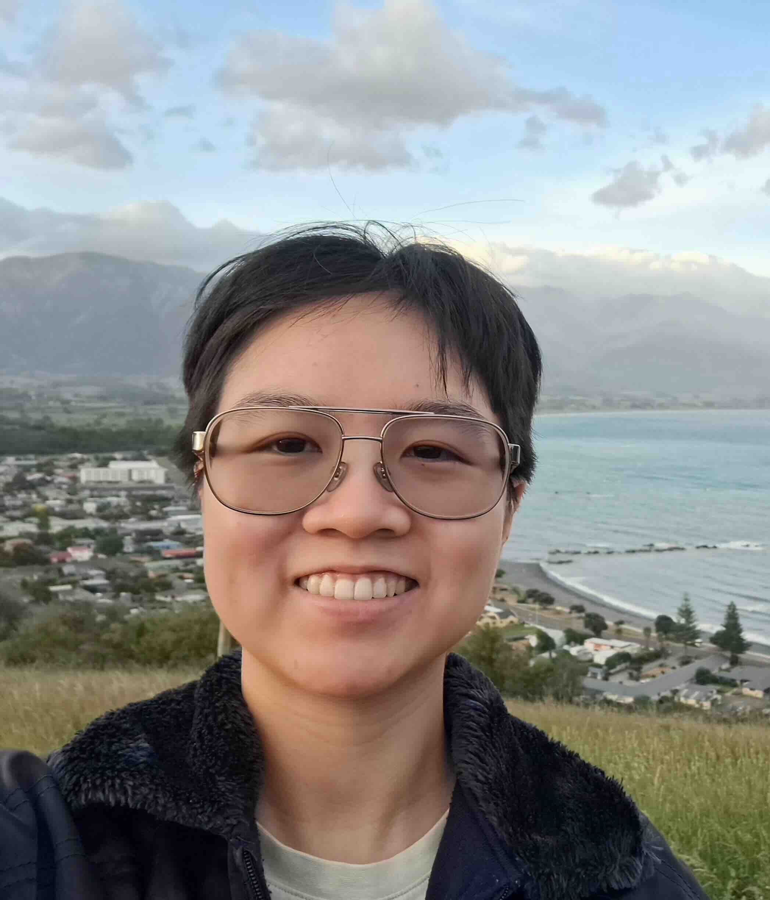

Team
Director
Professor Joseph Bulbulia
Director, EPIC-lab: 📧 joseph.bulbulia@vuw.ac.nz
🔗 University Profile Full CV
About
Professor Joseph Bulbulia (Joe) teaches and researches in the School of Psychological Science at Victoria University of Wellington. His research investigates the complex drivers of human cooperation, conflict, and well-being, with a focus on the role of religion and values. Answering such fundamental questions requires moving beyond correlation to identify cause and effect. To meet this challenge, Joseph specialises in methodologies for inferring causality from observational data and founded EPIC-Lab to advance this work. He also directs the Centre for Applied Cross-Cultural Research (CACR).
Research Projects Joe’s methodological focus is applied through his leadership roles in two major longitudinal projects:
New Zealand Attitudes and Values Study (NZAVS): Joe is a member of the senior leadership team and principle investigator on the study’s largest projects. He uses 15-years of repeated measures longitudinal data from over 76,000+ New Zealanders to investigate religion, social cohesion, and trust.
Pulotu Database of Pacific Religions: as a founding co-investigator, Joe uses this database of 116 Austronesian cultures to test theories about the evolution of religious beliefs and their effects on social behaviour.
Supervision
Joe supervises students in a broad range of areas, including:
- Personality and individual differences
- Political psychology
- Well-being/Flourishing
- Religion (his primary interest)
Research Fellow
Dr. Inkuk Kim
Dr. Inkuk Kim is a Research Fellow at the Centre for Applied Cross-cultural Research and the School of Psychological Sciences at Victoria University of Wellington. His research focuses on fostering social cohesion to mitigate conflicts in multicultural societies, addressing climate change, and enhancing well-being. He is currently investigating the causal effects of trust in science on environmental attitudes and behaviours.
- Project: New Zealand Attitudes and Values Study (NZAVS)
- Methods: Longitudinal Modified Treatment Policies; Causal Machine Learning
- ORCID Profile
- University Profile
- GitHub
PhD Students
Jake Ireland

Jake graduated with a Bachelor of Science in Psychology and Mathematics from Victoria University of Wellington in 2020. During his studies, he contributed to research on cross-cultural psychology, drug abuse, and face perception. Since graduating, he has worked in cyber security and, since 2022, has been researching cultural evolution with the Causal Lab at Victoria University. He completed his Honours in 2024 and began his PhD in 2025. Jake is investigating the co-evolution of religious and political culture in the Pacific.
- Project: Pulotu
- Methods: Causal Machine Learning
- ORCID Profile
Jessie Auckram

Jessie is investigating individual differences in personal resilience related to poverty.
- Project: New Zealand Attitudes and Values Study (NZAVS)
- Methods: Heterogeneous Treatment Effects; Longitudinal Modified Treatment Policies; Causal Machine Learning
Master’s Students
Boyang Cao
Boyang is researching the causal effects of prejudice on personality.
- Project: New Zealand Attitudes and Values Study (NZAVS)
- Methods: Heterogeneous Treatment Effects; Longitudinal Modified Treatment Policies; Causal Machine Learning
Hannah Robinson

Hannah is researching the causal effects of religious service attendance on personality.
- Project: New Zealand Attitudes and Values Study (NZAVS)
- Methods: Heterogeneous Treatment Effects; Longitudinal Modified Treatment Policies; Causal Machine Learning
Zahle Wisely

Zahle is investigating the causal effects of employer gratitude on multi-dimensional well-being.
- Project: New Zealand Attitudes and Values Study (NZAVS)
- Methods: Heterogeneous Treatment Effects; Longitudinal Modified Treatment Policies; Causal Machine Learning
Research Assistants
Millie Rea

Millie is investigating extensions of epic-lab workflows to policy settings, focusing on IDI (Integrated Data Infrastructure) data.
- Methods: Heterogeneous Treatment Effects; Longitudinal Modified Treatment Policies; Causal Machine Learning
Alumni
Dr. John Mark Kempthorne
John Mark received his PhD from the School of Psychology at Victoria University of Wellington in 2025. His disseration investigated application of causal methods to NZAVS time-series data. He is currently working as a Post-doctoral Fellow at the Shaver Lab
Bella Chong

Bella received her Master’s degree from Victoria University of Wellington in 2023. Her research investigated the causal effects of work hours on multi-dimensional well-being.
- Project: New Zealand Attitudes and Values Study (NZAVS)
- Methods: Longitudinal Modified Treatment Policies
- ORCID Profile
Join Us!
If you’re interested in joining our team, please contact:
📧 joseph.bulbulia@vuw.ac.nz